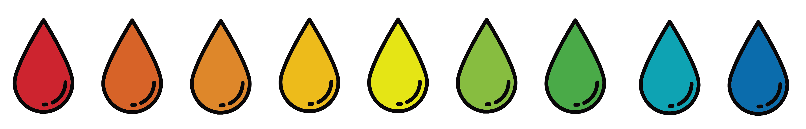

Blood donation details
Who we are
The Australian Red Cross Lifeblood is committed to facilitating the donation of blood for various patients in need across Australia. In fact:
- One in three Australians will need blood or blood products in their lifetime.
- One in 30 Australians give blood each year (3%)
- One blood donation can save up to three lives (ARCL, 2019)
- Australia needs more than 31,000 donations every week
This is why we need YOU! to donate blood to the Australian Red Cross Lifeblood in order to save lives.
Who you can help


Types of blood donation
There are about five litres of blood in the human body and it's made up of several useful components. You may be able to donate blood, plasma or platelets. Each type of blood donation is used for different medical treatment and your blood type determines the best donation for you to make.
- Blood: Can be used for cancer, blood diseases, anaemia, heart disease, stomach disease, kidney disease, childbirth, operations, blood loss, trauma, burns.
- Plasma: Can be used in 18 different life-giving ways – from treating serious burns and cancer, to protecting people with brain and nerve diseases. It’s always being developed to help in new ways.
- Platelets: Can be used for cancer, leukaemia (particularly during chemotherapy and bone marrow transplants), surgery, trauma, liver disease.

How your donation works
Every day more than 5,000 Australians give blood at a Lifeblood donor centre. It's your chance to relax, be pampered, enjoy a free snack – and feel great knowing that you're saving lives. Here is the four step process of donating blood if you are eligible to donate!
- Welcome: Arrive at the donor centre to a friendly welcome from our reception staff member. They'll greet you and quickly check your valid ID. Fill out the donor questionnaire they give you. It's completely confidential and there to protect you and the person who receives your blood.
- Interview: A trained staff member will go over your questionnaire answers with you and ask some questions to check that you're fine to donate. They'll give you a 'finger prick' test to check your level of haemoglobin (a protein which contains iron) and test your blood pressure.
- Donate: Sit back and relax on a comfy couch while you donate. You can read, chat with our team members or just enjoy some uninterrupted TV time. We'll keep a close eye on you while you're donating to make sure you're OK. Talk to a staff member if you feel uncomfortable or worried.
- Relax and Refresh: After your donation's finished, rest on the couch for at least 5-10 minutes. When you're done with the couch, head to the refreshments area and relax for at least another 15 minutes with a complimentary cool drink and savoury snack. This is the best part! Have a drink on us – grab a free water or sports drink to take with you. Drink it over the next hour to stay hydrated.
The experiences of blood donators